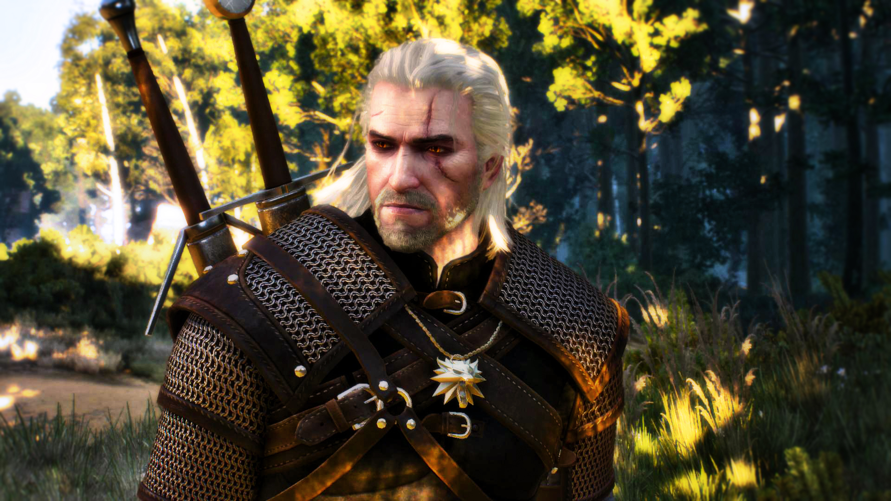
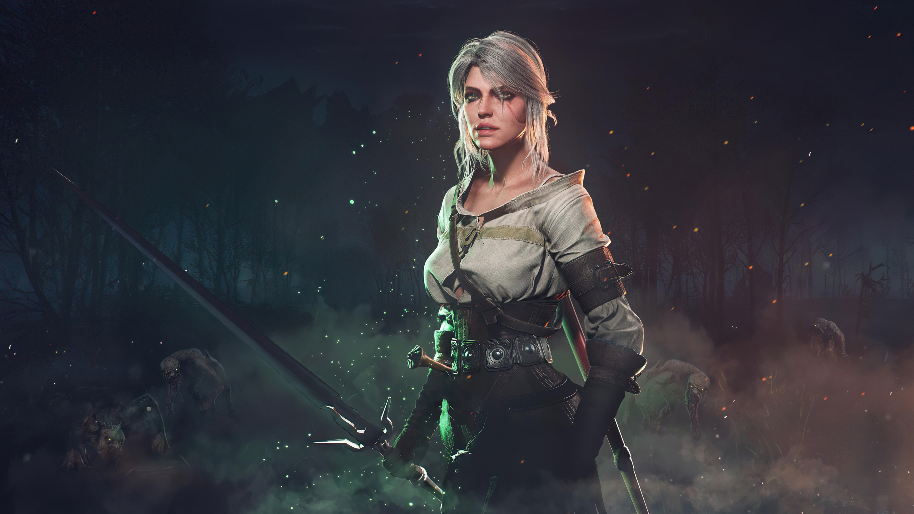
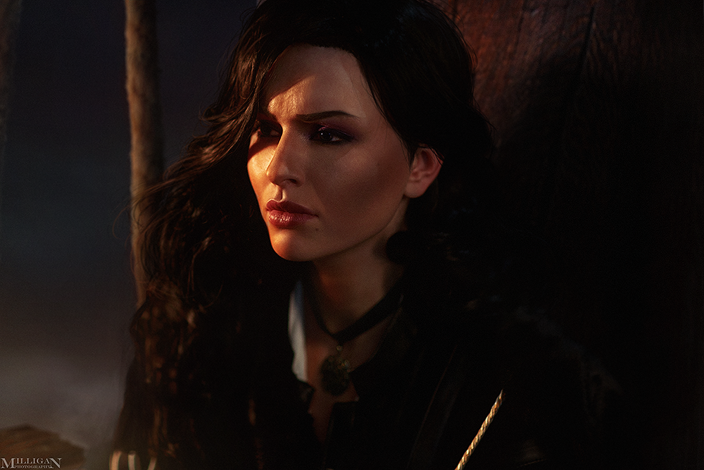
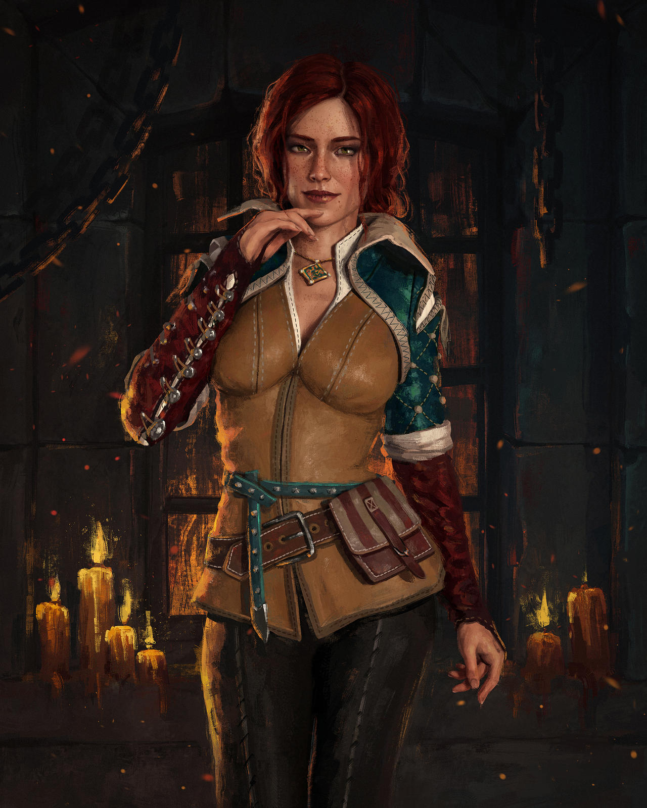
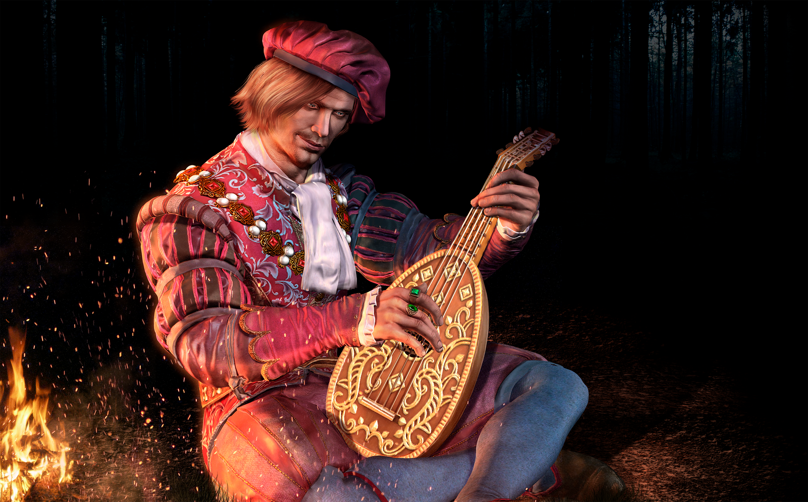
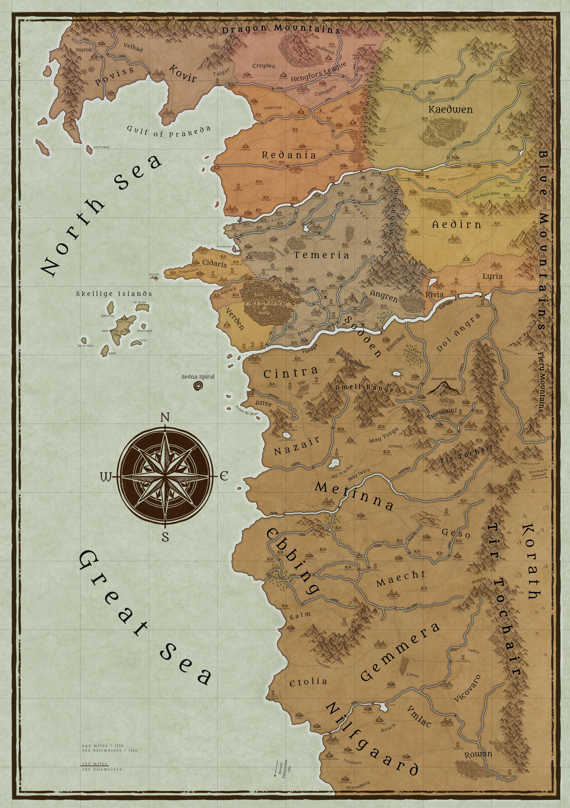

How The Witcher came about?
Andrzej Sapkowski, a Polish author with a background in economics and sales, conceived "The Witcher" universe with a short story submitted to a fantasy magazine contest in 1986, drawing heavily from Slavic folklore and his own keen observations of human nature. This world centers on witchers, professional monster slayers like the iconic Geralt of Rivia, who undergo rigorous training, mutations, and magical enhancements to combat the creatures that plague their world. The Continent, the primary setting, is a complex, morally ambiguous realm marked by political strife, racial tensions, and the lasting impact of the Conjunction of the Spheres, a cataclysmic event that merged worlds and introduced magic and monsters. Sapkowski's work distinguishes itself through its nuanced characters, exploration of ethical dilemmas, and a grounded, often grim, portrayal of a fantasy world where clear distinctions between good and evil are rare.
Main Characters
    Geralt
Ciri
Yennefer
Triss
Dandelion
Kingdoms
The Northern Kingdoms
- Redania: One of the most powerful kingdoms in the north, known for its strong economy and well-trained army. The capital is Tretogor.
- Temeria: A strategically important kingdom, located on the border with Nilfgaard. The capital is Vizima.
- Kaedwen: The largest kingdom in the north in terms of territory, known for its mountains and forests. The capital is Ard Carraigh.
- Aedirn: A kingdom with a long history of independence, known for its rich cities and refined culture. The capital is Vengerberg.
- Lyria and Rivia: Two smaller kingdoms that frequently ally themselves in political and military matters. The capital of Lyria is Lyria, and the capital of Rivia is Rivia.
Nilfgaard
Nilfgaard is a powerful and expansionist empire in The Witcher universe, located south of the Northern Kingdoms. Known for its formidable military strength and centralized government, Nilfgaard seeks to dominate the continent through conquests and political influence. Its sophisticated culture and stratified society contrast with its reputation for aggression and imperial ambition. Nilfgaard is a major antagonist in the series, triggering conflicts that shape the destiny of the characters and kingdoms to the north.
Books and Games
Books
Games
- The Last Wish
- Sword of Destiny
- Season of Storms
- Blood of Elves
- Time of Contempt
- Baptism of Fire
- The Tower of the Swallow
- The Lady of the Lake
The witcher books
- The Witcher
- The Witcher 2: Assassins of Kings
- The Witcher 3: Wild Hunt
The Witcher Games